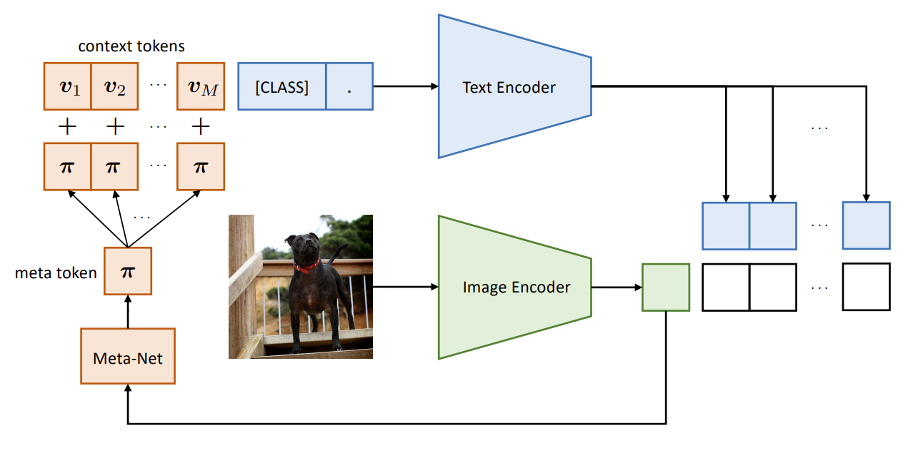

Paper 1: BERT: Pre-training of Deep Bidirectional Transformers for Language Understanding
Paper 2: Smarter, Better, Faster, Longer: A Modern Bidirectional Encoder for Fast, Memory Efficient, and Long Context Finetuning and Inference
The standard approach to vision related tasks is to take a large manually annotated dataset and train on it. This reaches SOTA and also learns representations useful for downstream tasks. But this approach has major limitations. The cost and complexity of annotating datasets is considerable, especially when the class taxonomy is fine-grained requiring expert knowledge. The natural consequence to this problem is to either think of data sources that are easily available or to use unsupervised learning methods. Unsupervised learning methods don't directly use the labels of the datasets, but are highly data intensive, and even more so when they are deprived of the implicitly benefits from careful selection and the resulting underlying structure of the generally used dataset. Interestingly, data often comes with informative metadata for free. For instance, user tags associated with images can be used as image labels. Even richer, companion text for images, is sometimes available for free. To utilize this type of data, the task is reframed to: Can we train transferable visual representations from limited sets of image-caption pairs? If so, how should we formulate the interaction between images and captions? All these 3 papers aim to model this in different ways.
This paper tries to model the interactions between images and captions by modeling this task as multiple different proxy tasks. All these tasks warrant our attention as they are all pretty intersting desgin problems. The paper doesn't make firm claims about why one of the proxies achieve the highest scores. Following are the proxy tasks:
CoCoOp builds on CoOp by incorporating a lightweight neural network to generate an input-conditional token (vector) for each image. Unlike CoOp’s static prompts, which are tailored to each task or class, CoCoOp’s dynamic prompts adapt to each individual instance, making them less sensitive to class shifts. In CoOp, the learned context overfits the base classes, failing to capture more generalizable elements needed for broader scene recognition. The static context in CoOp is optimized solely for a specific set of training classes. In contrast, CoCoOp conditions the prompt on each input instance (image), avoiding the overfitting issue of static context. A simple approach to implement CoCoOp would involve building M neural networks to generate M context tokens, but this would result in a model significantly larger than CoOp due to the increased number of parameters (M × neural network size). Instead like the M context vectors from CoOp are learnt using a lightweight neural network, Meta-Net, which generates a conditional token for each input. This token is then combined with the context vectors, achieving efficiency while improving the model's adaptability.  CoCoOp architecture has two learnable parameters - first is the context like CoOp, and the other is the Meta-Net, which generates the conditional token for each input image.
This blog is not academic in nature, and the content is taken from a lot of sources. The primary source of information are the CoOp and CoCoOp papers themselves. Apart from them the following sources were used (non-exhaustive list):